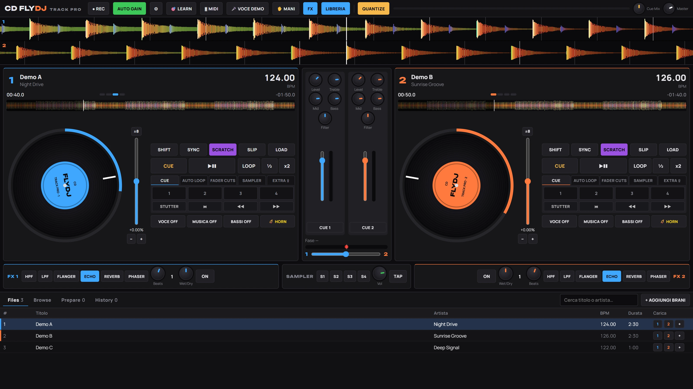
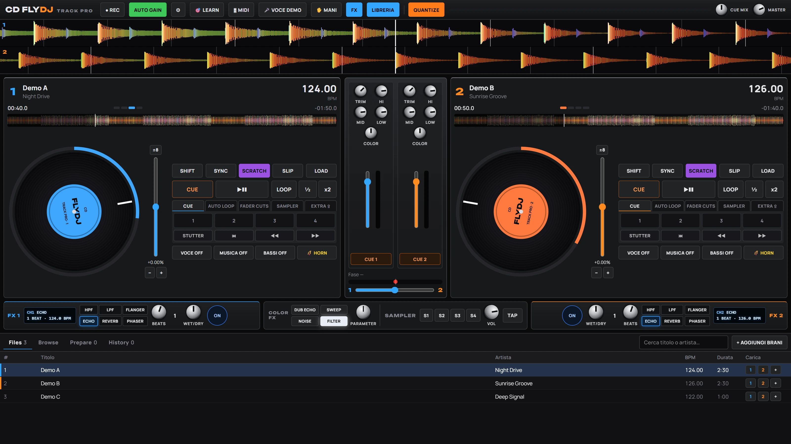
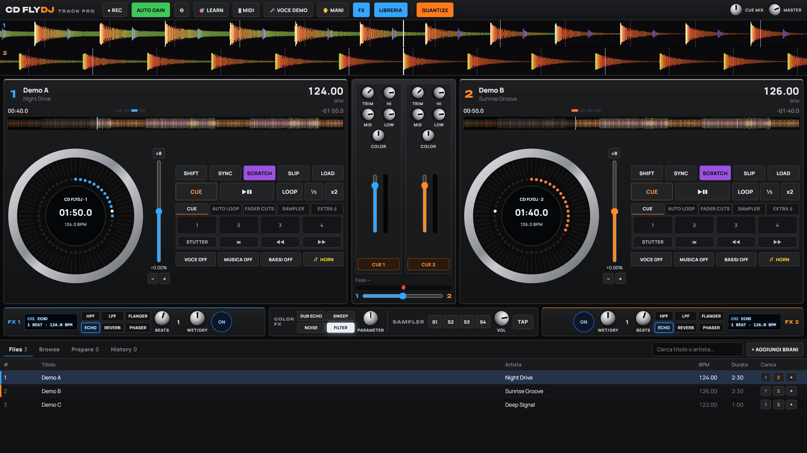

CD FlyDJ Track Pro
Console DJ a due deck che si suona con il controller, il touch, la tastiera o i gesti delle mani. Sync preciso, effetti per deck e cuffia separata, senza installare nulla.

Problema e utenti
Un set completo, ovunque ci sia uno schermo
Per suonare servono di solito un programma pesante da installare, un computer dedicato e una configurazione lunga di controller e cuffia. CD FlyDJ Track Pro parte da una pagina: colleghi il controller, carichi i brani e sei in console, su PC o tablet.
- Configurazione del controller e della cuffia lunga e fragile.
- Software legato a un solo computer.
- Poche soluzioni pensate per il touch e per chi sta imparando.
DJ
Due deck, sync, hot cue, loop ed effetti per preparare e suonare un set.
Eventi
Console leggera su PC o tablet, registrazione del mix e cuffia separata.
Intrattenimento
Gesti delle mani davanti alla webcam e sampler con horn per animare la serata.
Formazione
Interfaccia touch chiara, scorciatoie da tastiera e pannelli guidati per imparare.
Funzioni chiave
Già pronte nella console
Tutto quello che segue funziona oggi nella versione in sviluppo.

Due deck con sync preciso
- BPM analizzato al centesimo, beat grid e waveform colorata per frequenza.
- Sync di tempo e battuta con correzione continua non udibile, half/double tempo.
- Hot cue, auto loop e roll, fader cuts, sampler, slip, censor e scratch.
Mixer ed effetti per deck
- EQ 3 bande, filtro/Color FX, crossfader, master e CUE MIX.
- Effetti separati per ogni deck: HPF, LPF, Flanger, Echo, Reverb, Phaser.
- Stems approssimati: voce off, musica off, bassi off.

Controller MIDI pronto all'uso
- Preset incorporato per il controller di riferimento, con SHIFT e scene dei pad.
- Modalità LEARN: tocchi un comando a schermo e muovi il controller.
- Configurazione guidata ed export/import della mappa.
Casse e cuffia separate, REC
- Con scheda a 4 canali: casse sui canali 1-2, cuffia sui 3-4, con test audio guidato.
- Registrazione del mix in WAV.
Come funziona
Un'unica console, su web e desktop
Oggi la console è una web app che gira nel browser. Il prodotto finale aggiungerà un'app desktop, gli account e la sincronizzazione.
Web app
La stessa console online in HTTPS, installabile come app su tablet e PC. Serve per MIDI, webcam e installazione.
App desktop (.exe)
Stesso motore della web app, con installer, aggiornamenti automatici e uso offline.
Licenza cloud
Chiave legata all'account e a un numero massimo di computer, verifica online all'avvio e periodo offline per suonare senza internet.
Sincronizzazione
Mappe MIDI, dati dei brani (BPM, griglia, hot cue, loop), playlist e impostazioni allineati tra i dispositivi. L'audio resta sui tuoi dispositivi.
Il programma non distribuisce musica: usi i tuoi file. Webcam e gesti delle mani sono elaborati sul dispositivo.
Roadmap
Dove siamo e dove andiamo
- 0
Console web
FattoDue deck, sync, pad, mixer, effetti per deck, libreria, REC, skin, modalità tablet, MIDI con preset e LEARN, gesti delle mani, voce in demo.
- 0+
Rifinitura della console
In corso- Libreria persistente: cartella musica collegata e dati dei brani salvati.
- Keylock: cambiare tempo senza cambiare tono.
- Gesti delle mani più affidabili.
- Codice diviso in moduli.
- 1
Repository del codice
FattoCodice versionato in un repository dedicato.
- 2
Web app online
ProssimoPubblicazione in HTTPS con dominio dedicato e prova su tablet.
- 3
Backend: account, licenze, sync
ProssimoUn solo backend per web, desktop e telefono: login, licenze e sincronizzazione di preset, brani, playlist e impostazioni.
- 4
App desktop con licenza
ProssimoProgramma .exe firmato, installer, aggiornamenti automatici, verifica della licenza e modalità prova.
- 5
Telefono
ProssimoTelecomando e preparazione del set (playlist, cue, impostazioni) sincronizzati con la console.
Early access
Vuoi provarla per primo?
Stiamo cercando DJ, organizzatori di eventi e scuole per le prime prove. Scrivici chi sei e come useresti la console.